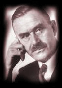
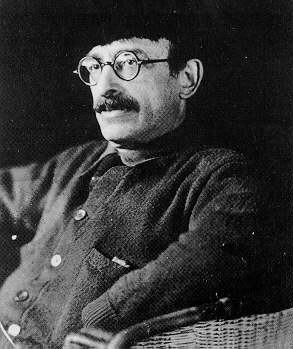
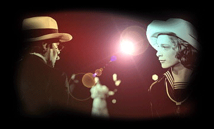

| > | |
| the middle is never the easiest place to begin | [2003-10-15 02:37] |
| [mood vodka] [music Mahler's Adagietto from Symphony No. 5] |
|
| i believe that belief should be practical - what this means is that i choose to makebelieve what seems right to guide me so it was that after failing to have the courage to talk to the blond boy on the train from wansee i decided that my guardian spirit in berlin would be thomas mann  he had revealed himself to me and i was in his care - i would wait for love - probably platonic as i envisaged it then the wansee train boy would reappear and love less platonic would unfold - because thats how my man mind agenda works - every time i go to karstadt i expect him to appear lock eyes shoot film but instead my guardian delivered not one but two - and inflexibly platonic - half way round the world away - streams of exchanged words as soon as these chats began i knew that berkman was here too  love's dungeon flower i still dont know why i have been brought to berlin 2003 - but so far it seems that these dead men want to move my heart back closer to where it was such has been the summer of nostalgia - thanks a billionbillion a billionplus my dear wei xiang strangeslinky soulcompanion across the lastminute sleeping chitchats of night - thanks for every jacques the fatalist story of my loves u encouraged me along i can feel the vodka talking now and that is good - the memories of sawdust on the floor - school boys crammed in the cubicle of hannigans pub in love street - what was that street called with the chalet dor where both i and my parents hung out in different slices of belfast time? - coming home a little drunk at dinner time - who invented youth? stop the world - lets do a complete analysis im silly now and may not manage to get much further - but i will try - really i have nothing else to do - joao is in sweden and the german taxpayers flat is big and empty like a vast impregnable castle - here on pluto its up to me to set the hours so i will try to continue o the number of paragraphs that have been deleted - that u have not seen because - i have a law here - no false effect - may hell swallow me and break my chicken bones if that is not true - really i could take a shortcut to my conclusion if i were just to say its so but actually im not even sure which sentence im in any more - how we do delete - well now im laughing because im in really no fit state to continue but i must because ive got to get to number two - is there a rhyme there? i need a biscuit with the depth of a drama and the simplicity of a song through wei xiang i met jun kit - hermitstyle who had the most purely chinese short story of the 21st century - ghost lake - well for me it felt like that - and i said to strangeslinky that hermiststyle is cool and id like to be introduced - and brave fair strangeslinky said yes and wow it was so - and my brain it was split tonight i went to see Death in Venice and i read a story as i was watching - i need another biscuit - about a guy who came to berlin and touched the beginning and the end - and the end of the story was at the end of the film where Von Achenbach watches Tadzio shimmering in the sunset shore - i realized that it was me - i had been there - his age and by the lido sea - thats where i learnt to swim on my back - tadzio had been me - i had been tadzio - it all seemed a bit silly and surprising - i remembered it - thunderclouds over the adriatic - the endless shallow beach - and i was like a kind of little fish called boy so really id better get to work - serve my other side how what or where - all was gibberish of a drunken irish man there is a moment in the movie were they just look at each other - when the nasty faketootless singer comes - which is just supreme - it is the look of "you feel it too" this livejournal is dedicated to the road back to being an artist it may not be worth it it may not be the right thing to do it may not be anything other than whatever it is that could be the worst thing that it is but - my conclusion here is ...  that the beginning and the end are far enough apart for one old heart to revel in it wei xiang jun kit i'm drunk and laughing are u worried? will we ever meet? hey keyboard give me another one of those question mark things - i want to throw it like a boomerang around the room i should stop haha jabber jabber ugk mmm splat . (u know that was my first livejournal posting) my head is wobbling id better stop aie! ick . |
|